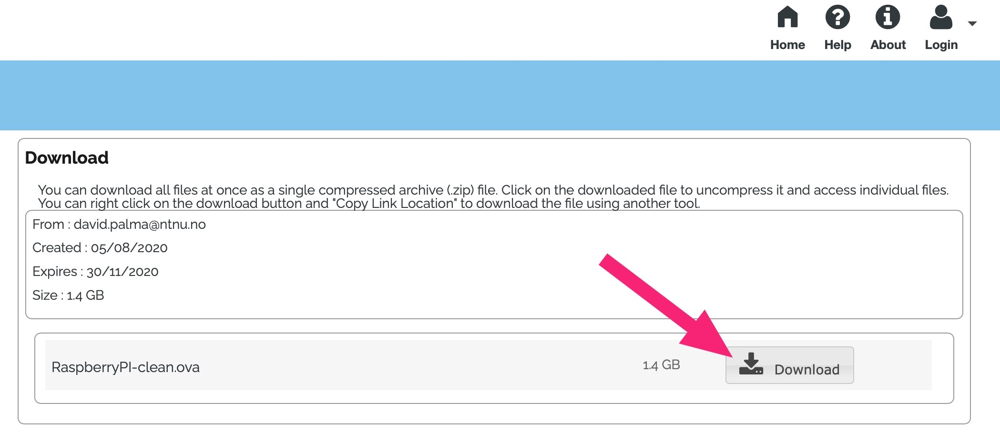
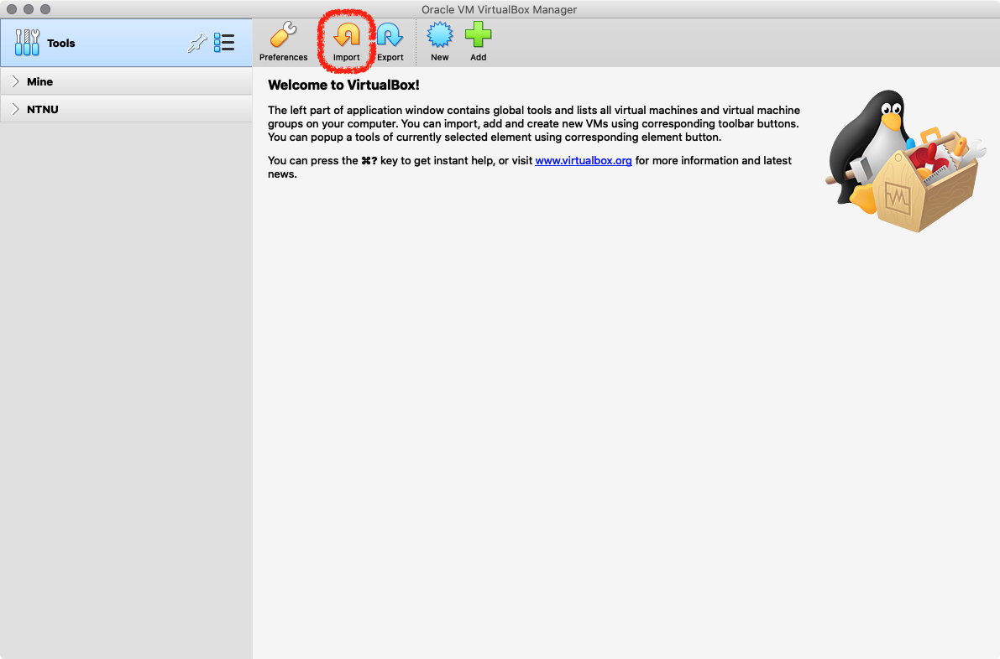
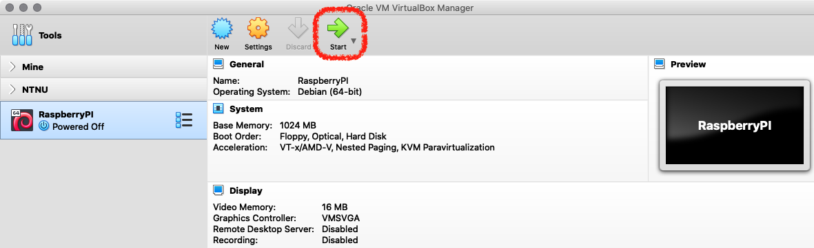
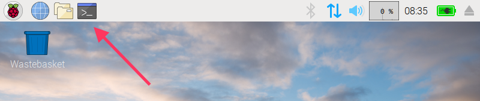
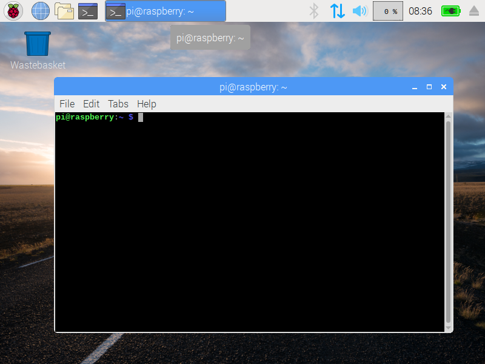

Project Goal
For this week we have set a goal: We want you to be able to create your own website, running on a computer that you control and configure, and that serves your own website. Each day we get a bit closer to that goal.
Of course, you learn much more than just serving your own website. On our way you will learn many useful things that will help you through the rest of this course, the rest of your studies and also later during your job:
- You will be able to operate your own computer. More precisely, you will be able to run a simulated version of a computer, via virtualization.
- You will get familiar with the most important commands to control the computer and the applications running on it, via the command line.
- You will be able to operate a computer remotely, via a tool called SSH.
- You will get some basic understanding of networking.
But you will also learn some more skills that will be useful:
- You will learn to work in teams.
- You will get used to English as instruction language.
Day 1: Virtual Machines and The Raspberry Pi
Today we will start things off by letting you become familiar with the Raspberry Pi.
Learning Goals for Today
- Become familiar with Virtual Box
- Become familiar with the Raspberry Pi
- Connecting the Pi
- Changing the default password
New Linux Commands
- ls — to list files and folders.
- passwd — to change passwords.
- pwd — to show in which directory you are.
Downloading the necessary software
Before continuing with the tasks for today, please download the files and software below. You can start the downloads and proceed to the next step before they finish.
Raspbian Virtual Image
This file contains an operating system that we will later install into the virtual computer.
Raspbian Virtual Image on Filesender (1.4 GB)

Virtual Box
Virtual Box is the program that allows us to run other computers within your own computer. The homepage for Virtual Box is here.
While the files download, we proceed to the next task.
Teamwork
We organized you in teams of 3 students in this semester. This is a good number to work together behind a computer. It’s enough to learn something from each other and work together, but not too many so it get’s to hard to coordinate your work.
The teams are fixed over the semester so that you get used to each other and develop a better team dynamic over time.
During the beginning of the lab, when we do quizzes, for example, we join always two teams of three into a double-team of six students. The pairing of the teams is also the same each week. Team 1 is a double team with team 2, and team 3 with team 4, and so on.
We start with a task on teamwork.
Go to teamwork task
Installing Virtual Box
In this activity we will import a Raspberry Pi virtual image into your personal computer. We’ll use Oracle’s Virtual Box as a basis for virtualisation but many other solutions exist.
After following these steps you should have a basic setup very similar to what we would have with a real Raspberry Pi. The idea is to use this virtual machine (VM) in headless mode and use ssh to test commands and configurations. There are many options to configure your VM but not all of them will be covered here.
A final note, you may experiment with more than one VM and create networks to test different networking tools and configurations. We will talk about this later in TTM4175 and in TTM4200. You may also try other Linux distributions if you are considering changing your operating system or having a dual boot setup in your PC.
- If you haven’t done this already, simply navigate to virtualbox.org on your browser and download it.
- Afterwards install VirtualBox as you would install any other software in your computer.
- Finally, don’t forget to install Oracle’s VirtualBox Extension Pack.
If your installation fails on MacOS see if this helps.
Import the pre-created Virtual Machine Image
- Start by opening VirtualBox. To import the pre-created Virtual Machine (VM) go to
File -> Import Appliance or press the icon shown in the figure below.

- In the newly opened window select the correct path for the VM and press
Next or Continue.
- Select where you want to save your VM. You will need to select a location with at least 8GB of free space. Afterwards you can just press
Import (no further changes are needed at this point).
Configuring the new VM
- After the import is completed make sure you have selected the newly created VM and open its settings, choosing the
Network separator.
- Change network “Adapter 1” so that it is “Attached to:” “NAT”, as seen in the figure below. This will create a local network in your computer (host), through which the virtual machine will connect to the Internet.
- We need one extra configuration to setup our network. Click on
Advanced, followed by Port Forwarding and add a new entry by clicking on the green icon on the right side of the window.
- Because the new virtual network is “hidden” from our host machine, we want to create a rule that allows us to connect to our virtual machine. In particular, we will want data packets sent to port 2222 in our host machine to be forwarded to port 22 in our VM. Create a rule shown below and press
OK.
A port is like a door to access different applications. An IP is like the address to an apartment block with multiple doors.
If you have plenty of memory in your machine, you can go to the settings window navigate to the System tab and increase the Base Memory for having a faster VM.
The same can be done in the Processor tab if you have a multi-core system.
If you want to share files between your PC and the VM navigate to the Shared Folders tab and select a folder in host machine you want to have in the Virtual Machine.
Select Auto-mount and choose a path where this folder will be mounted.
After knowing your VM’s IP address you can start using it in headless mode and save computing resources. You can use ssh to easily access your VM and to test some commands with a straightforward copy+paste between your PC and the VM.
Starting the Raspberry Pi
For our project we use the Raspberry Pi. It’s a mini-computer, so when something goes wrong the consequences are not severe. But although it is a small and cheap computer, you operate it just like most other servers. The Raspberry Pi runs the same commands (programs) and operating system like “real” servers. So learning how to operate a Raspberry Pi is the best exercise for operating also bigger machines later.
We will use a virtual machine instead of a real Raspberry Pi but you may try everything with a physical version of the Pi.
The following video provides an introduction, and shows how to operate the Pi:
First boot
To start your Raspberry Pi virtual machine simply press the start button! The Raspberry Pi will probably boot directly into a graphical user interface with windows. This looks a lot like Windows or macOS, and you can use it in a similar way.

Command Line
For many tasks related to system administration and programming it is useful to use the command line. This is especially the case when the computer is somewhere in a server room or data center far away and you want to log into it remotely. (We will do that later.) Therefore, we are going to learn how to use the command line.
You can access the command line by opening the terminal application from the menu:


Changing the Password
Everybody will have the same password that we set for this image: H1NanL8rEn
However, since you will be connected to the Internet, you want to prevent others from accessing your machine and creating trouble.
Therefore we need to change the password before we connect the Pi to the network. For this, we use the command passwd. Type the command in the command line and press the Enter key:
Select a strong password and share it with your team members so you can try to remotely access each other’s VM.
Checking existing files
In Unix-based file systems everything is organised in a “tree” structure, where “/” is the root. To see the files in your current directory type the ls command and compare the output with the files in the graphical user interface.
To learn more check these links: